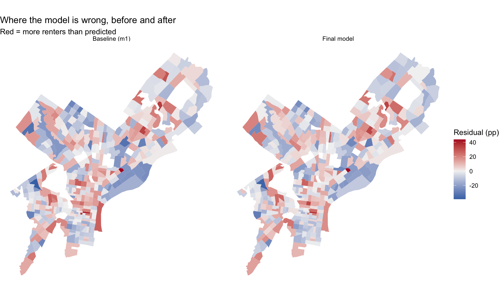

Code
library(tidyverse)
library(tidycensus)
library(sf)
library(caret)
library(gt)
Sys.getenv("CENSUS_API_KEY") != ""[1] TRUEPredicting the renter share of Philadelphia census tracts
Philadelphia is a city of both renters and homeowners, and the balance between them shifts from block to block. In this analysis, I predict the share of occupied housing units that are renter-occupied in each census tract. I start with a baseline model built from the American Community Survey, add spatial features built from the city’s open data portal, transform variables, and keep a model log the whole way through so I can see which changes actually lower out-of-sample error.
library(tidyverse)
library(tidycensus)
library(sf)
library(caret)
library(gt)
Sys.getenv("CENSUS_API_KEY") != ""[1] TRUEEvery model is cross-validated with the helper below. It runs 10-fold cross-validation with the same seed every time, so every model in the log is tested on the same folds. It also stops if any variable in the formula has missing values, so no rows are dropped by accident.
ctrl <- trainControl(method = "cv", number = 10)
cv_rmse <- function(formula, data) {
df <- if (inherits(data, "sf")) st_drop_geometry(data) else data
vars <- all.vars(formula)
bad <- vars[sapply(vars, function(v) any(is.na(df[[v]])))]
if (length(bad) > 0) {
stop("These variables have NAs: ", paste(bad, collapse = ", "),
". Fill them or choose another variable (Rule 1: don't drop rows).")
}
set.seed(5080)
fit <- train(formula, data = df, method = "lm", trControl = ctrl)
fit$results$RMSE
}model_log <- tibble(
model = character(),
added = character(),
cv_rmse = numeric(),
notes = character()
)My outcome is the renter share: renter-occupied units (B25003_003) divided by all occupied units (B25003_001). For the baseline, I use four ACS predictors that plausibly relate to whether households rent: median household income, median age, average household size, and the share of adults with a bachelor’s degree or higher. I leave out housing-type variables such as units in structure (B25024), because the number of apartments in a building measures tenure almost directly, which would be leakage.
philly_tracts <- get_acs(
geography = "tract",
state = "PA",
county = "Philadelphia",
variables = c(
total_pop = "B01003_001",
occ_units = "B25003_001", # occupied housing units (denominator)
renter_occ = "B25003_003", # renter-occupied units (numerator)
med_inc = "B19013_001", # median household income
med_age = "B01002_001", # median age
avg_hh_size = "B25010_001", # average household size
edu_total = "B15003_001", # population 25+
ba = "B15003_022",
ma = "B15003_023",
prof = "B15003_024",
phd = "B15003_025"
),
year = 2023,
survey = "acs5",
output = "wide",
geometry = TRUE
) %>%
st_transform(2272)
|
| | 0%
|
|= | 1%
|
|= | 2%
|
|== | 3%
|
|== | 4%
|
|=== | 4%
|
|=== | 5%
|
|==== | 5%
|
|==== | 6%
|
|===== | 7%
|
|===== | 8%
|
|====== | 9%
|
|======= | 10%
|
|======== | 12%
|
|========= | 13%
|
|========== | 14%
|
|========== | 15%
|
|=========== | 16%
|
|============ | 17%
|
|============ | 18%
|
|============= | 19%
|
|============== | 20%
|
|=============== | 21%
|
|=============== | 22%
|
|================ | 23%
|
|================= | 24%
|
|================= | 25%
|
|================== | 26%
|
|=================== | 27%
|
|=================== | 28%
|
|==================== | 29%
|
|===================== | 30%
|
|===================== | 31%
|
|====================== | 32%
|
|======================= | 33%
|
|======================= | 34%
|
|======================== | 35%
|
|========================= | 36%
|
|========================== | 36%
|
|========================== | 37%
|
|=========================== | 38%
|
|============================ | 39%
|
|============================ | 40%
|
|============================= | 41%
|
|============================== | 42%
|
|============================== | 43%
|
|=============================== | 44%
|
|================================ | 45%
|
|================================ | 46%
|
|================================= | 47%
|
|================================== | 48%
|
|================================== | 49%
|
|=================================== | 50%
|
|==================================== | 51%
|
|===================================== | 52%
|
|===================================== | 53%
|
|====================================== | 54%
|
|======================================= | 55%
|
|======================================= | 56%
|
|======================================== | 57%
|
|========================================= | 58%
|
|========================================= | 59%
|
|========================================== | 60%
|
|=========================================== | 61%
|
|=========================================== | 62%
|
|============================================ | 63%
|
|============================================= | 64%
|
|============================================= | 65%
|
|============================================== | 66%
|
|=============================================== | 67%
|
|================================================ | 68%
|
|================================================ | 69%
|
|================================================= | 70%
|
|================================================== | 71%
|
|================================================== | 72%
|
|=================================================== | 73%
|
|==================================================== | 74%
|
|==================================================== | 75%
|
|===================================================== | 76%
|
|====================================================== | 77%
|
|====================================================== | 78%
|
|======================================================= | 79%
|
|======================================================== | 80%
|
|======================================================== | 81%
|
|========================================================= | 82%
|
|========================================================== | 83%
|
|=========================================================== | 84%
|
|=========================================================== | 85%
|
|============================================================ | 86%
|
|============================================================= | 87%
|
|============================================================= | 88%
|
|============================================================== | 88%
|
|=============================================================== | 89%
|
|=============================================================== | 90%
|
|================================================================ | 91%
|
|================================================================= | 92%
|
|================================================================= | 93%
|
|================================================================== | 94%
|
|=================================================================== | 95%
|
|=================================================================== | 96%
|
|==================================================================== | 97%
|
|===================================================================== | 98%
|
|===================================================================== | 99%
|
|======================================================================| 100%Because the outcome is a proportion, I use moe_prop() for its margin of error rather than reusing the MOE of the renter count. I then calculate the coefficient of variation (CV) from the standard error.
philly_tracts <- philly_tracts %>%
mutate(
# outcome: % of occupied units that are renter-occupied
y = case_when(
occ_unitsE > 0 ~ renter_occE / occ_unitsE * 100,
TRUE ~ NA_real_
),
y_moe = case_when(
occ_unitsE > 0 ~ moe_prop(renter_occE, occ_unitsE, renter_occM, occ_unitsM) * 100,
TRUE ~ NA_real_
),
y_cv = case_when(
y > 0 ~ (y_moe / 1.645) / y * 100,
TRUE ~ NA_real_
),
# baseline predictors
med_inc = med_incE,
med_age = med_ageE,
avg_hh_size = avg_hh_sizeE,
pct_ba = case_when(
edu_totalE > 0 ~ (baE + maE + profE + phdE) / edu_totalE * 100,
TRUE ~ NA_real_
)
)I classify CV values below 12% as reliable, 12%–40% as somewhat reliable, and above 40% as unreliable.
# Tracts with no value for the outcome
sum(is.na(philly_tracts$y))[1] 20summary(philly_tracts$y_cv) Min. 1st Qu. Median Mean 3rd Qu. Max. NAs
1.778 11.472 15.127 16.764 21.059 67.534 21 philly_tracts <- philly_tracts %>%
mutate(reliability = case_when(
is.na(y_cv) ~ "Unavailable",
y_cv < 12 ~ "Reliable",
y_cv <= 40 ~ "Somewhat reliable",
TRUE ~ "Unreliable"
))
philly_tracts %>%
st_drop_geometry() %>%
count(reliability) %>%
mutate(reliability = factor(reliability,
levels = c("Reliable", "Somewhat reliable",
"Unreliable", "Unavailable"))) %>%
arrange(reliability) %>%
gt() %>%
cols_label(reliability = "Reliability", n = "Tracts") %>%
tab_header(
title = "Reliability of tract renter-share estimates",
subtitle = "Philadelphia, 2019–2023 ACS"
) %>%
tab_source_note(
"CV = (MOE / 1.645) / estimate × 100. Jurjevich et al. (2018) thresholds: <12% reliable; 12–40% somewhat reliable; >40% unreliable."
)| Reliability of tract renter-share estimates | |
| Philadelphia, 2019–2023 ACS | |
| Reliability | Tracts |
|---|---|
| Reliable | 111 |
| Somewhat reliable | 271 |
| Unreliable | 5 |
| Unavailable | 21 |
| CV = (MOE / 1.645) / estimate × 100. Jurjevich et al. (2018) thresholds: <12% reliable; 12–40% somewhat reliable; >40% unreliable. | |
ggplot(philly_tracts, aes(x = y)) +
geom_histogram(bins = 30, fill = "steelblue") +
theme_minimal() +
labs(
title = "Renter share across Philadelphia tracts",
subtitle = "2019–2023 ACS",
x = "Renter-occupied units (%)",
y = "Number of tracts"
)
The renter share is built from large counts, because every occupied unit is either owned or rented. The median tract CV is 15.1%, and only 1% of tracts with a calculable CV are unreliable, well under the one-third threshold. The unreliable estimates are concentrated in tracts where very few households rent, because a small share divides a similar-sized MOE by a small number. An agency such as the city’s Division of Housing and Community Development would want to predict this outcome to target tenant protection programs, such as eviction diversion and rental repair assistance, toward the neighborhoods where renters live.
I filter once here, and every later step uses tracts.
tracts <- philly_tracts %>%
filter(total_popE > 0,
!is.na(y),
!is.na(med_inc),
!is.na(med_age),
!is.na(avg_hh_size),
!is.na(pct_ba))
nrow(philly_tracts)[1] 408nrow(tracts)[1] 381I lose 27 of 408 tracts. These are places with no residents or households, such as Fairmount Park, the airport, and industrial land along the rivers, plus a few institutional tracts (prisons and campuses) where median income is suppressed. None of them contains a meaningful number of renter households.
tracts %>%
st_drop_geometry() %>%
select(y, med_inc, med_age, avg_hh_size, pct_ba) %>%
pivot_longer(-y, names_to = "predictor", values_to = "value") %>%
ggplot(aes(x = value, y = y)) +
geom_point(alpha = 0.5, color = "steelblue") +
geom_smooth(method = "lm", se = FALSE, color = "red") +
facet_wrap(~ predictor, scales = "free_x") +
theme_minimal() +
labs(
title = "Renter share and the baseline predictors",
subtitle = "Philadelphia tracts, 2019–2023 ACS",
x = NULL,
y = "Renter-occupied units (%)"
)
f1 <- y ~ med_inc + med_age + avg_hh_size + pct_ba
m1 <- lm(f1, data = tracts)
summary(m1)
Call:
lm(formula = f1, data = tracts)
Residuals:
Min 1Q Median 3Q Max
-39.131 -8.968 -0.077 9.321 43.913
Coefficients:
Estimate Std. Error t value Pr(>|t|)
(Intercept) 1.464e+02 8.153e+00 17.960 < 2e-16 ***
med_inc -3.835e-04 3.678e-05 -10.425 < 2e-16 ***
med_age -1.061e+00 1.061e-01 -10.002 < 2e-16 ***
avg_hh_size -1.961e+01 2.187e+00 -8.965 < 2e-16 ***
pct_ba 3.083e-01 6.144e-02 5.017 8.09e-07 ***
---
Signif. codes: 0 '***' 0.001 '**' 0.01 '*' 0.05 '.' 0.1 ' ' 1
Residual standard error: 13.33 on 376 degrees of freedom
Multiple R-squared: 0.5779, Adjusted R-squared: 0.5734
F-statistic: 128.7 on 4 and 376 DF, p-value: < 2.2e-16cv_m1 <- cv_rmse(f1, tracts)
model_log <- model_log %>%
add_row(model = "m1", added = "ACS baseline",
cv_rmse = cv_m1,
notes = "income, median age, household size, % BA+")
model_log# A tibble: 1 × 4
model added cv_rmse notes
<chr> <chr> <dbl> <chr>
1 m1 ACS baseline 13.4 income, median age, household size, % BA+On tracts it hasn’t seen, the baseline model misses the renter share by about 13.4 percentage points.
tracts <- tracts %>% mutate(resid_m1 = residuals(m1))
ggplot(tracts) +
geom_sf(aes(fill = resid_m1), color = NA) +
scale_fill_gradient2(low = "#2166ac", mid = "grey95", high = "#b2182b", midpoint = 0) +
theme_void() +
labs(title = "Baseline model: where it's wrong",
subtitle = "Red = more renters than predicted",
fill = "Residual (pp)")
The residuals are not randomly scattered. [Confirm against the rendered map:] I expect red tracts (more renters than predicted) around the university campuses in University City and near Temple, and in parts of North and West Philadelphia where incomes are low but older rowhome stock has been converted to rentals. Blue tracts are likely in the far Northeast and Northwest, where homeownership is high. The baseline does not know where students live, and it does not know about neighborhood disinvestment beyond median income. I therefore pull university campuses, residential burglaries, and shootings in Part 3.
Many of the city’s datasets are served through a Carto SQL API. The helper below sends a SQL query in a URL and reads the GeoJSON that comes back.
carto_get <- function(sql) {
url <- paste0("https://phl.carto.com/api/v2/sql?format=GeoJSON&q=", URLencode(sql))
st_read(url, quiet = TRUE)
}I pull three layers, all from 2023 or earlier so that no information comes from after the outcome’s time window. Records with no location are counted and removed.
# Layer 1: residential burglaries, 2023 (Carto)
burglary_raw <- carto_get(
"SELECT the_geom, text_general_code, dispatch_date
FROM incidents_part1_part2
WHERE dispatch_date >= '2023-01-01' AND dispatch_date < '2024-01-01'
AND text_general_code = 'Burglary Residential'"
) %>%
st_transform(st_crs(tracts))
burglary <- burglary_raw %>% filter(!st_is_empty(burglary_raw))
# Layer 2: shooting victims, 2023 (Carto)
shootings_raw <- carto_get(
"SELECT the_geom, date_
FROM shootings
WHERE date_ >= '2023-01-01' AND date_ < '2024-01-01'"
) %>%
st_transform(st_crs(tracts))
shootings <- shootings_raw %>% filter(!st_is_empty(shootings_raw))
# Layer 3: university and college campuses (OpenDataPhilly GeoJSON)
universities_raw <- st_read(
"https://hub.arcgis.com/api/v3/datasets/8ad76bc179cf44bd9b1c23d6f66f57d1_0/downloads/data?format=geojson&spatialRefId=4326&where=1%3D1",
quiet = TRUE
) %>%
st_transform(st_crs(tracts))
universities <- universities_raw %>% filter(!st_is_empty(universities_raw))
layer_summary <- tibble(
layer = c("Residential burglaries (2023)", "Shooting victims (2023)",
"University campuses"),
records = c(nrow(burglary_raw), nrow(shootings_raw), nrow(universities_raw)),
no_location = c(sum(st_is_empty(burglary_raw)), sum(st_is_empty(shootings_raw)),
sum(st_is_empty(universities_raw)))
)
layer_summary %>%
gt() %>%
cols_label(layer = "Layer", records = "Records", no_location = "No location (dropped)") %>%
tab_header(title = "Open data layers")| Open data layers | ||
| Layer | Records | No location (dropped) |
|---|---|---|
| Residential burglaries (2023) | 3800 | 119 |
| Shooting victims (2023) | 1673 | 1 |
| University campuses | 644 | 0 |
All three layers follow from the Part 2C map. University campuses capture student housing, which drives renting in a way that median age and education only partly describe. The campus file is updated as needed rather than by year, but the campuses themselves existed long before 2023, so using it does not bring in information from the future. Residential burglaries and shootings stand in for neighborhood conditions and disinvestment that median income misses: areas with higher crime tend to have lower homeownership and more absentee landlords. None of these layers is built from tenure, so none is leakage.
I build four features of three types: two densities, a distance to the nearest campus, and a distance to City Hall. Counts are divided by tract area, because raw counts mostly measure tract size. Distances are measured from a point on the surface of each tract, which is always inside the tract, unlike a centroid.
tract_pts <- st_point_on_surface(tracts)
city_hall <- st_sfc(st_point(c(-75.1636, 39.9526)), crs = 4326) %>%
st_transform(st_crs(tracts))
nearest_univ <- st_nearest_feature(tract_pts, universities)
tracts <- tracts %>%
mutate(
area_sqmi = as.numeric(st_area(.)) / 27878400, # sq ft in a sq mile
# counts, then densities (0 when none, so no NAs)
n_burglary = lengths(st_intersects(., burglary)),
burglary_per_sqmi = n_burglary / area_sqmi,
n_shootings = lengths(st_intersects(., shootings)),
shootings_per_sqmi = n_shootings / area_sqmi,
# nearest distance (0 if the point falls on a campus)
dist_univ_mi = as.numeric(
st_distance(tract_pts, universities[nearest_univ, ], by_element = TRUE)) / 5280,
# distance to one place
dist_ch_mi = as.numeric(st_distance(tract_pts, city_hall)) / 5280
)
tracts %>%
st_drop_geometry() %>%
select(burglary_per_sqmi, shootings_per_sqmi, dist_univ_mi, dist_ch_mi) %>%
summary() burglary_per_sqmi shootings_per_sqmi dist_univ_mi dist_ch_mi
Min. : 0.00 Min. : 0.000 Min. :0.0000 Min. : 0.1729
1st Qu.: 13.59 1st Qu.: 0.000 1st Qu.:0.4090 1st Qu.: 2.3091
Median : 33.54 Median : 9.743 Median :0.8668 Median : 4.3983
Mean : 52.94 Mean : 22.150 Mean :1.2407 Mean : 5.0474
3rd Qu.: 69.96 3rd Qu.: 28.321 3rd Qu.:1.8154 3rd Qu.: 7.1631
Max. :367.98 Max. :311.871 Max. :4.4928 Max. :14.7878 After each feature, I fit a model, cross-validate it, and log it.
# m2: + distance to the nearest campus
f2 <- update(f1, . ~ . + dist_univ_mi)
cv_m2 <- cv_rmse(f2, tracts)
model_log <- model_log %>%
add_row(model = "m2", added = "distance to nearest campus",
cv_rmse = cv_m2,
notes = "nearest distance; OpenDataPhilly campuses")
# m3: + residential burglary density
f3 <- update(f2, . ~ . + burglary_per_sqmi)
cv_m3 <- cv_rmse(f3, tracts)
model_log <- model_log %>%
add_row(model = "m3", added = "burglary density",
cv_rmse = cv_m3,
notes = "2023 residential burglaries per sq mi")
# m4: + shooting density
f4 <- update(f3, . ~ . + shootings_per_sqmi)
cv_m4 <- cv_rmse(f4, tracts)
model_log <- model_log %>%
add_row(model = "m4", added = "shooting density",
cv_rmse = cv_m4,
notes = "2023 shooting victims per sq mi")
# m5: + distance to City Hall
f5 <- update(f4, . ~ . + dist_ch_mi)
cv_m5 <- cv_rmse(f5, tracts)
model_log <- model_log %>%
add_row(model = "m5", added = "distance to City Hall",
cv_rmse = cv_m5,
notes = "distance to one place")
model_log# A tibble: 5 × 4
model added cv_rmse notes
<chr> <chr> <dbl> <chr>
1 m1 ACS baseline 13.4 income, median age, household size, …
2 m2 distance to nearest campus 13.4 nearest distance; OpenDataPhilly cam…
3 m3 burglary density 13.4 2023 residential burglaries per sq mi
4 m4 shooting density 13.4 2023 shooting victims per sq mi
5 m5 distance to City Hall 13.4 distance to one place # How much did each feature change CV RMSE?
spatial_steps <- model_log %>%
filter(model %in% c("m1", "m2", "m3", "m4", "m5")) %>%
mutate(change = cv_rmse - lag(cv_rmse)) %>%
filter(model != "m1")
spatial_steps# A tibble: 4 × 5
model added cv_rmse notes change
<chr> <chr> <dbl> <chr> <dbl>
1 m2 distance to nearest campus 13.4 nearest distance; OpenDataPh… 0.0964
2 m3 burglary density 13.4 2023 residential burglaries … -0.0733
3 m4 shooting density 13.4 2023 shooting victims per sq… 0.0226
4 m5 distance to City Hall 13.4 distance to one place 0.0297best_feature <- spatial_steps$added[which.min(spatial_steps$change)]
worst_feature <- spatial_steps$added[which.max(spatial_steps$change)]
feature_reason <- c(
"distance to nearest campus" = "student housing is a large source of rentals that the ACS predictors only partly capture",
"burglary density" = "it overlaps with income and education, which already describe neighborhood conditions",
"shooting density" = "it captures disinvestment and absentee ownership beyond what median income measures",
"distance to City Hall" = "central location overlaps with campus distance, since several campuses sit near Center City"
)The feature that helped most was burglary density, which changed CV RMSE by -0.07 percentage points. A likely reason is that it overlaps with income and education, which already describe neighborhood conditions. The feature that helped least was distance to nearest campus, with a change of 0.1 points, so it made out-of-sample error slightly worse. A likely reason is that student housing is a large source of rentals that the ACS predictors only partly capture. A feature can look important on a map and still add nothing in cross-validation if another variable already carries the same information; the extra coefficient then only adds noise.
So far, every predictor has entered the model as a straight line. Here I test whether letting the model bend lowers CV RMSE. I keep the outcome untransformed so that every row in the log stays in percentage points.
Income and both densities are right-skewed: a few tracts have very large values.
tracts %>%
st_drop_geometry() %>%
select(med_inc, burglary_per_sqmi, shootings_per_sqmi) %>%
pivot_longer(everything(), names_to = "variable", values_to = "value") %>%
ggplot(aes(x = value)) +
geom_histogram(bins = 30, fill = "steelblue") +
facet_wrap(~ variable, scales = "free") +
theme_minimal() +
labs(title = "Skewed predictors", x = NULL, y = "Number of tracts")
I use log() for income, which is never 0 after the filter, and log1p() for the densities, which can be 0.
f_log <- y ~ log(med_inc) + med_age + avg_hh_size + pct_ba +
dist_univ_mi + log1p(burglary_per_sqmi) + log1p(shootings_per_sqmi) + dist_ch_mi
cv_m6 <- cv_rmse(f_log, tracts)
model_log <- model_log %>%
add_row(model = "m6", added = "log of income and both densities",
cv_rmse = cv_m6,
notes = "log() for income; log1p() for densities")ggplot(tracts, aes(x = dist_ch_mi, y = y)) +
geom_point(alpha = 0.4, color = "steelblue") +
geom_smooth(method = "lm", formula = y ~ x + I(x^2), se = FALSE, color = "red") +
theme_minimal() +
labs(title = "Renter share and distance to City Hall",
x = "Distance to City Hall (miles)", y = "Renter-occupied units (%)")
f_sq <- update(f_log, . ~ . + I(dist_ch_mi^2))
cv_m7 <- cv_rmse(f_sq, tracts)
model_log <- model_log %>%
add_row(model = "m7", added = "squared distance to City Hall",
cv_rmse = cv_m7,
notes = "m6 + I(dist_ch_mi^2)")I group tracts into rings by distance from City Hall and make sure each ring has at least 20 tracts.
tracts <- tracts %>%
mutate(
ring = case_when(
dist_ch_mi < 2 ~ "Core",
dist_ch_mi < 5 ~ "Inner",
TRUE ~ "Outer"
),
ring = factor(ring, levels = c("Core", "Inner", "Outer"))
)
tracts %>% st_drop_geometry() %>% count(ring) ring n
1 Core 79
2 Inner 134
3 Outer 168f_cat <- update(f_log, . ~ . + ring)
cv_m8 <- cv_rmse(f_cat, tracts)
m_cat_fit <- lm(f_cat, data = tracts)
coef(m_cat_fit)[c("ringInner", "ringOuter")]ringInner ringOuter
-5.217861 -6.466165 model_log <- model_log %>%
add_row(model = "m8", added = "ring (Core / Inner / Outer)",
cv_rmse = cv_m8,
notes = "m6 + ring factor; reference = Core")
# All three transformations together
f_all <- update(f_log, . ~ . + I(dist_ch_mi^2) + ring)
cv_m9 <- cv_rmse(f_all, tracts)
model_log <- model_log %>%
add_row(model = "m9", added = "log + squared + ring",
cv_rmse = cv_m9,
notes = "m6 + I(dist_ch_mi^2) + ring")
model_log# A tibble: 9 × 4
model added cv_rmse notes
<chr> <chr> <dbl> <chr>
1 m1 ACS baseline 13.4 income, median age, household …
2 m2 distance to nearest campus 13.4 nearest distance; OpenDataPhil…
3 m3 burglary density 13.4 2023 residential burglaries pe…
4 m4 shooting density 13.4 2023 shooting victims per sq mi
5 m5 distance to City Hall 13.4 distance to one place
6 m6 log of income and both densities 13.1 log() for income; log1p() for …
7 m7 squared distance to City Hall 13.0 m6 + I(dist_ch_mi^2)
8 m8 ring (Core / Inner / Outer) 13.1 m6 + ring factor; reference = …
9 m9 log + squared + ring 13.0 m6 + I(dist_ch_mi^2) + ring transform_steps <- tibble(
transform = c("the logs", "the squared term", "the ring categories"),
change = c(cv_m6 - cv_m5, cv_m7 - cv_m6, cv_m8 - cv_m6)
)
transform_steps# A tibble: 3 × 2
transform change
<chr> <dbl>
1 the logs -0.316
2 the squared term -0.153
3 the ring categories -0.0209best_transform <- transform_steps$transform[which.min(transform_steps$change)]Of the three, the logs helped most, changing CV RMSE by -0.32 percentage points (the logs are compared with m5; the squared term and the rings are each compared with m6). For the ring variable, the reference level is Core, tracts within 2 miles of City Hall. Holding the other variables in m8 constant, an Outer-ring tract has a predicted renter share about 6.5 percentage points lower than a Core tract.
I keep the combination that earned its place by CV RMSE, not by p-values.
candidates <- tibble(
model = c("m5", "m6", "m7", "m8", "m9"),
formula = list(f5, f_log, f_sq, f_cat, f_all),
cv = c(cv_m5, cv_m6, cv_m7, cv_m8, cv_m9)
)
candidates %>% select(model, cv)# A tibble: 5 × 2
model cv
<chr> <dbl>
1 m5 13.4
2 m6 13.1
3 m7 13.0
4 m8 13.1
5 m9 13.0final_pick <- candidates$model[which.min(candidates$cv)]
f_final <- candidates$formula[[which.min(candidates$cv)]]
f_finaly ~ log(med_inc) + med_age + avg_hh_size + pct_ba + dist_univ_mi +
log1p(burglary_per_sqmi) + log1p(shootings_per_sqmi) + dist_ch_mi +
I(dist_ch_mi^2)m_final <- lm(f_final, data = tracts)
summary(m_final)
Call:
lm(formula = f_final, data = tracts)
Residuals:
Min 1Q Median 3Q Max
-37.294 -8.446 -0.700 7.941 43.277
Coefficients:
Estimate Std. Error t value Pr(>|t|)
(Intercept) 421.69783 23.84558 17.685 < 2e-16 ***
log(med_inc) -28.29305 2.40325 -11.773 < 2e-16 ***
med_age -0.94114 0.11263 -8.356 1.32e-15 ***
avg_hh_size -17.92889 2.18684 -8.199 4.01e-15 ***
pct_ba 0.31344 0.06358 4.929 1.25e-06 ***
dist_univ_mi 1.35799 0.76292 1.780 0.07590 .
log1p(burglary_per_sqmi) 1.82851 0.75502 2.422 0.01592 *
log1p(shootings_per_sqmi) -0.71056 0.63557 -1.118 0.26429
dist_ch_mi -2.16075 0.81883 -2.639 0.00867 **
I(dist_ch_mi^2) 0.16790 0.05515 3.044 0.00250 **
---
Signif. codes: 0 '***' 0.001 '**' 0.01 '*' 0.05 '.' 0.1 ' ' 1
Residual standard error: 12.75 on 371 degrees of freedom
Multiple R-squared: 0.6191, Adjusted R-squared: 0.6099
F-statistic: 67.01 on 9 and 371 DF, p-value: < 2.2e-16cv_final <- cv_rmse(f_final, tracts)
model_log <- model_log %>%
add_row(model = "final", added = paste("lowest CV RMSE of m5–m9:", final_pick),
cv_rmse = cv_final,
notes = "ACS baseline + campuses + crime + transformations")model_log %>%
gt() %>%
fmt_number(columns = cv_rmse, decimals = 2) %>%
cols_label(model = "Model", added = "What changed",
cv_rmse = "CV RMSE (pp)", notes = "Notes") %>%
tab_header(title = "Model log",
subtitle = "10-fold cross-validation, same folds for every model")| Model log | |||
| 10-fold cross-validation, same folds for every model | |||
| Model | What changed | CV RMSE (pp) | Notes |
|---|---|---|---|
| m1 | ACS baseline | 13.35 | income, median age, household size, % BA+ |
| m2 | distance to nearest campus | 13.45 | nearest distance; OpenDataPhilly campuses |
| m3 | burglary density | 13.38 | 2023 residential burglaries per sq mi |
| m4 | shooting density | 13.40 | 2023 shooting victims per sq mi |
| m5 | distance to City Hall | 13.43 | distance to one place |
| m6 | log of income and both densities | 13.11 | log() for income; log1p() for densities |
| m7 | squared distance to City Hall | 12.96 | m6 + I(dist_ch_mi^2) |
| m8 | ring (Core / Inner / Outer) | 13.09 | m6 + ring factor; reference = Core |
| m9 | log + squared + ring | 13.00 | m6 + I(dist_ch_mi^2) + ring |
| final | lowest CV RMSE of m5–m9: m7 | 12.96 | ACS baseline + campuses + crime + transformations |
tracts <- tracts %>% mutate(resid_final = residuals(m_final))
tracts %>%
select(resid_m1, resid_final) %>%
pivot_longer(c(resid_m1, resid_final), names_to = "model", values_to = "residual") %>%
mutate(model = factor(recode(model,
resid_m1 = "Baseline (m1)",
resid_final = "Final model"),
levels = c("Baseline (m1)", "Final model"))) %>%
ggplot() +
geom_sf(aes(fill = residual), color = NA) +
scale_fill_gradient2(low = "#2166ac", mid = "grey95", high = "#b2182b", midpoint = 0) +
facet_wrap(~ model) +
theme_void() +
labs(title = "Where the model is wrong, before and after",
subtitle = "Red = more renters than predicted",
fill = "Residual (pp)")
c(sd_m1 = sd(tracts$resid_m1), sd_final = sd(tracts$resid_final)) sd_m1 sd_final
13.25768 12.59394 The standard deviation of the residuals falls from 13.3 percentage points in the baseline to 12.6 in the final model. [After rendering, describe which clusters from Part 2C faded, for example around the campuses, and which remain.]
ggplot(tracts, aes(x = y_cv, y = abs(resid_final))) +
geom_point(alpha = 0.5, color = "steelblue") +
geom_smooth(se = FALSE, color = "red") +
theme_minimal() +
labs(title = "Size of the miss against the reliability of the estimate",
x = "CV of the renter-share estimate (%)",
y = "Size of the miss (pp)")
My baseline model, built only from income, median age, household size, and education, missed the renter share by about 13.4 percentage points on tracts it had not seen. The final model (m7) lowers that to 13, a gain of 0.4 points. The spatial feature that helped most was burglary density, likely because it overlaps with income and education, which already describe neighborhood conditions. The most disappointing was distance to nearest campus, likely because student housing is a large source of rentals that the ACS predictors only partly capture. The model log showed me that a variable can look important on a map and still add little once related variables are in the model.
Take median age. The β̂ reading is that, holding the other variables constant, a tract whose median age is 10 years older has a predicted renter share about 9.4 percentage points lower; this is an association, not evidence that aging causes people to buy homes. The ŷ reading is that median age stays in the model because it carries information about tenure that lowers out-of-sample error, whether or not the relationship is causal.
The final residual map still shows clusters [name them after rendering]. Next I would measure the age and size of the housing stock, using building age and lot size from the Office of Property Assessment’s property data, because older, subdivided rowhomes are often rented even where incomes are moderate. I would also add college enrollment from the ACS (table B14007) to separate student renters from long-term renters.
Some of the remaining error is fog rather than model failure. For 60% of tracts, the final model’s miss is smaller than the outcome’s own 90% margin of error, so the model cannot be judged wrong there. The correlation between the estimate’s CV and the size of the miss is 0.06, so large misses are not concentrated in the noisiest tracts, so most of the remaining error is a modeling problem.